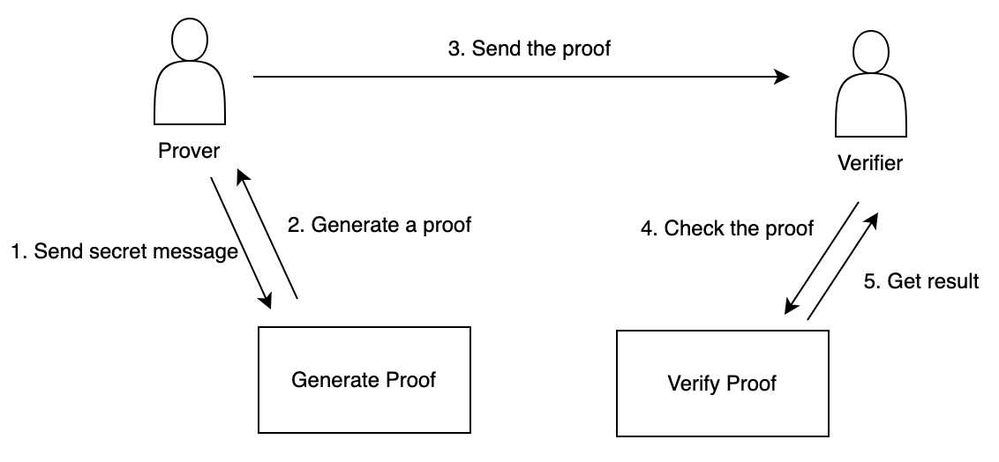
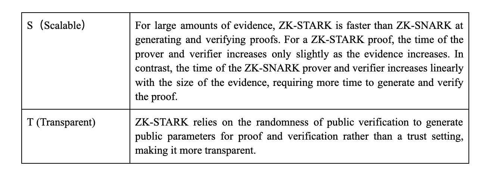

The Third Wave of Technological Advancements in Blockchain: Exploring the Application of Zero-Knowledge Proof Technology
Authors:
@Jesse_meta, Research Fellow at SUSS NiFT
@kaplannie, Security Researcher at Least Authority
@EatonAshton2, Security Researcher at Beosin
Information leakage incidents have become commonplace whether the information is stored on the Internet or in offline archives, whether it is due to a subjective intent or objective accident. As long as the information is stored centrally, it is vulnerable to attack from a single point. If the verification process requires a trusted third party, moral hazard and inefficiency will inevitably occur. The solution to information security is essential and urgent. The zero-knowledge proof technology allows users to perform verification more efficiently and securely while protecting their privacy. Suppose Bitcoin is the first invention that blockchain brought to the real world, providing a new way to store value, and Ethereum's smart contract is the second milestone that unlocked the potential of innovation. In that case, the application of zero-knowledge proof is the third and most significant wave of technological innovation in the history of blockchain development, bringing privacy and scalability. This is an essential part of the Web3 ecosystem and a vital fundamental technology with the potential to promote social transformation.
This article introduces the application scenario, working principle, development status, and future trend of Zero-Knowledge Proof from a non-technical perspective to let readers without a technical background know about the great changes that Zero-Knowledge Proof will bring.
1. What is Zero-Knowledge Proof?
Consider an individual who wishes to verify ownership of another person's phone number as an illustrative scenario. In order to prove this claim without revealing the actual number, a method is needed that allows proof without revealing the number. This concept is embodied in Zero-Knowledge Proof (ZKP), a cryptographic construct that provides a robust mechanism for information disclosure. The use of ZKP facilitates the retention of data ownership, enhances privacy protection, and significantly mitigates the risks associated with data breaches.
Three distinct attributes support the Zero-Knowledge Proof
paradigm:
Integrity
If a statement is true, an honest verifier will be convinced by an
honest prover. That is, right cannot be wrong.
Rationality
If a statement is false, in most cases, a deceitful prover cannot
convince an honest verifier of the false statement. That is, wrong
cannot be right.
Zero-knowledge
If a statement is true, the verifier cannot learn any additional information other than that the statement is true. A zero-knowledge proof has a small probability of producing a rationality error, that is, a cheating prover can make the verifier believe a false statement. Zero-knowledge proof is a proof of probability, not of certainty, but we can reduce the rationality error to negligible by some techniques.
2. The Application of Zero-Knowledge Proof
The two most crucial application scenarios of zero-knowledge proof are privacy and scalability.
2.1 Privacy
Zero-knowledge proof allows users to safely share necessary information to obtain goods and services without revealing personal information and to avoid hacking and disclosing personal identity information. With the gradual integration of digital and physical fields, the privacy protection function of zero-knowledge proof becomes very important for information security for Web3 and even beyond Web3. If there is no zero-knowledge proof, user information will exist in a trusted third-party database, which is potentially dangerous to be attacked by hackers. Zcash, a privacy-focused token designed to conceal transaction details, can exemplify the inaugural application of zero-knowledge proofs in blockchain.
2.1.1 Protecting and Verifying Identity Information
In contemporary digital interactions, individuals often provide personal information such as names, birth dates, email addresses, and complex passwords to prove authorized access. As a result, inadvertent exposure of sensitive information on digital platforms exists. An emerging concern is the prevalence of fraudulent telephone communications in which recipients are addressed by name, underscoring the critical implications of personal data dissemination.
Blockchain technology offers a solution by providing encrypted digital identifiers that encapsulate individual data. This digital manifestation creates a "decentralized identity," an entity resistant to forgery or alteration without the owner's consent. Such a decentralized system gives users the prerogative to delineate access permissions to their identities. It allows them to substantiate citizenship without the direct display of passport details. Furthermore, this system can streamline the verification process and reduce the frequency of access denials due to password amnesia.Within this framework, the zero-knowledge proof is derived from public records, providing evidence of a user's identity and confidential records for user authentication during service engagement. This approach not only refines the verification paradigm and improves user engagement, but also eliminates the need for centralized repositories of user data.
In addition, zero-knowledge proofing can create a private reputation system that allows service providers to verify that users meet certain reputation standards without revealing their identities. Users can anonymously export reputations from platforms such as Twitter and GitHub.
2.1.2 Anonymous Payment
The transaction details of bank payments are usually visible to many parties, including payment providers, banks, and the government, which exposes the privacy of ordinary citizens to some extent, and users need to trust the relevant parties not to do evil.
Cryptocurrency can get rid of third parties by directly conducting peer-to-peer transactions. However, the transactions on the mainstream public chain are publicly visible. Although the users' address is anonymous, there is still a way to find the real-world identity by analyzing the associated address on the chain and the information such as KYC from the exchange or Twitter off the chain. Knowing a person's wallet address is equivalent to checking a person's bank account balance at any time and may even threaten the user's identity and property.
The zero-knowledge proof can provide anonymous payment from three levels: privacy tokens, applications, and public chains. Privacy tokens such as Zcash and Monero hide transaction details, including senders and receivers' addresses, asset types, quantity, and times. Tornado Cash is a decentralized application in Ethereum that uses zero-knowledge proof to confuse transaction details to ensure privacy transfer (but is also used by hackers to launder money). Aleo is a Layer1 blockchain that aims to provide privacy features for applications at the protocol level.
2.1.3 Honest Behavior
Zero-knowledge proof can promote honest behavior while preserving privacy. The protocol can require users to submit zero-knowledge proof to prove their honest behavior. Because of the rationality of zero-knowledge proof (wrong or wrong), users must act honestly according to the agreement's requirements before submitting valid proof.
MACI (Minimum Anti-Collusion Infrastructure) is an application scenario to promote honesty and prevent collusion in chain voting or other forms of decision-making. The system uses key pair and zero-knowledge proof technology to achieve this goal. In MACI, users register their public keys into a smart contract and send their votes to the contract through encrypted messages. MACI's anti-collusion feature allows voters to change their public keys to prevent others from knowing their voting choices. At the end of the voting period, the coordinator uses zero-knowledge proof to prove that they have processed all the messages correctly, and the final voting result is the sum of all valid votes. This ensures the integrity and fairness of the voting.
2.1.4 Personal Information Verification
In scenarios such as loan applications, potential borrowers can provide a digital certificate of income obtained from their affiliates. The authenticity of this certificate can be verified using cryptographic means. Using zero-knowledge proof protocols, banks can determine whether an applicant's income meets the required threshold while ensuring that specific and sensitive data remains undisclosed.
2.1.5 Combining Machine Learning to Tap the Potential of Private Data Training machine learning
models typically require a large amount of data. Using zero-knowledge proof, data owners can prove that their data meets the requirements of model training without exposing that data. This is conducive to making private data work and realizing monetization.
In addition, zero-knowledge proof can allow model builders to prove that their model meets certain performance indicators. However, it is not necessary to disclose the details of the model to prevent others from copying or tampering with their model.
2.2 Scalability
As blockchain users increase, many executions are requested, resulting in transaction congestion. Some blockchains use sharding technology for scalability, but this requires a lot of complicated modifications to the basic layer of the blockchain, which may threaten the security of the blockchain. Another simple scheme is to take the ZK rollup route, use verifiable computation, outsource the computation to entities in another chain, and then submit the zero-knowledge proof and verifiable results to the main chain for verification. The zero-knowledge proof ensures the transaction's authenticity. The main chain only needs to update the results to the state without storing details or replaying calculations and without waiting for others to discuss whether the transaction is true, greatly improving efficiency and scalability. With the help of zero-knowledge proof, developers can design lightweight dapps that can run on common hardware such as mobile phones, which is more conducive to the popularization of Web3.
The scalability of zero-knowledge proof can be applied to both the first-layer network, such as the Mina protocol, and the second-layer network ZK rollups.
3. How Does Zero-Knowledge Proof Work
Dmitry Laverenov (2019) divided the zero-knowledge proof into interactive and non-interactive.
3.1 Interactive Zero-Knowledge Proof The basic form of interactive zero-knowledge proof consists of three steps: evidence, challenge, and response.
Evidence: The hidden secret information is the evidence of the witness. This evidence establishes a series of questions that can only be answered correctly by people who know this information. The prover began to randomly select questions and send the calculated answers to the verifier for proof.

Challenge: The verifier randomly selects another question from the set and asks the prover to answer it.

Response: The prover accepts the question, calculates the answer, and returns the result to the verifier. The prover's response enables the verifier to check whether the prover knows the evidence.

This process can be repeated many times until the probability of the prover guessing the correct answer without knowing the secret information becomes low enough. For a simplified mathematical example, if the probability that the prover can guess the correct answer without knowing the secret information is 1/2 and repeats the interaction ten times, the probability that the prover hits every time is only 0.097%, and it is extremely unlikely that the verifier will recognize the false proof.
3.2 Non-Interactive Zero-Knowledge Proof
Interactive zero-knowledge proof has its limitations. On the one hand, it requires a prover and verifier to exist simultaneously and to perform repeated verification. On the other hand, each time a new proof is computed, it requires the prover and verifier to transmit a set of information, and the proof cannot be used repeatedly in independent verification.
To overcome the limitation of interactive zero-knowledge proof, Manuel Blum, Paul Feldman, and Silvio Micali proposed a non-interactive zero-knowledge proof, in which the prover and verifier share the key and need only one round of verification to make the zero-knowledge proof more effective. The prover computes the secret information using a special algorithm to generate a zero-knowledge proof and sends it to the verifier. The verifier uses another algorithm to check whether the prover knows the secret information. Once the zero-knowledge proof is generated, anyone with a shared key and a verification algorithm can verify it.
Non-interactive zero-knowledge proof is a breakthrough in zero-knowledge proof technology, which promotes the development of using zero-knowledge proof systems today. The main methods are ZK-SNARK and ZK-STARK.
4. The Main Technical Path of Zero-Knowledge Proof
Alchemy(2022) divided the technical paths of zero-knowledge proof into ZK-SNARKs, ZK-STARKs, and recursive ZK-SNARK.
4.1 ZK-SNARK
ZK-SNARK is a succinct and non-interactive proof of zero knowledge.

To ensure the correctness of transaction executions on the network, the public chain must let other computers (nodes) re-execute each transaction. However, this method requires each node to re-run each transaction, which slows down the speed of the network and limits scalability. Nodes also need to store transaction data, which leads to the exponential growth of the blockchain.
For these limitations, ZK-SNARK plays a role. It can prove the correctness of the calculation outside the chain, without the need for nodes to replay each step of the calculation. This also eliminates the need for nodes to store redundant transaction data and improves network throughput.
When SNARKs are used to verify an off-chain calculation, the calculation is encoded in a mathematical expression to form the validity proof. The verifier checks the correctness of the proof. If it is proven that all checks have been passed, then the underlying calculation is considered valid. The size of the validity proof is many times smaller than the calculation it verifies, so we consider SNARK to be succinct.
Most ZK Rollups that use ZK-SNARK follow the following steps.
1. Layer 2 users sign the transaction and submit it to the verifier.
2. Verifier uses cryptography to compress multiple transactions to generate corresponding validity proofs (SNARK).
3. The smart contract on the Layer 1 chain verifies the validity proof, which determines whether this batch of transactions will be released to the main chain.
It is worth noting that ZK-SNARK needs to be trusted. At this stage, the key generator is given a program and a secret parameter to generate two public keys, which are used to create the proof and to verify the proof, respectively. These two public keys need to generate public parameters only once through a credible setting ‘ceremony’ and can be used many times by all parties wishing to participate in the zero-knowledge protocol. Users must believe that the participants in the trusted setting ceremony are not evil, and there is no way to evaluate the honesty of the participants. Knowing the secret parameters can generate fake proofs and deceive the verifier, so there are potential security risks. Currently, some researchers are exploring the scheme of ZK-SNARK without trust assumption.
Superiority
1. Security
ZK Rollup is considered a more secure scalable scheme than OP Rollup because ZK-SNARK uses advanced encryption security mechanisms, and it is difficult to deceive the verifier and perform malicious behavior.
2.High Throughput
ZK-SNARK reduces the amount of computation outside Ethereum, alleviates the congestion of the main network, and shares the transaction cost with offline computations, resulting in faster transaction speed.
3. Small Size of Proof
The small size of SNARK proofs makes them easy to verify on the main chain, which means the gas fee of transactions under the verification chain is low, which reduces the cost for users.
Limit
1. Relative centralization
Most of the time, it depends on a trusted setting. This is contrary to the original intention of blockchain to trust.
Generating validity certificates with ZK-SNARK is a computationally intensive process, and the certifier must invest in specialized hardware. These hardware are expensive and only a few people can afford them, so the proof process of ZK-SNARK is highly centralized.
2. Threat from Quantum Computing
ZK-SNARK uses elliptic curve cryptography (ECC) to encrypt the information used to generate validity certificates, which is relatively security at present. However, the progress of quantum computing may break its security model.
Projects Using ZK-SNARK
Polygon Hermez
Polygon acquired Hermez for $250 million in 2021, becoming the first case of a comprehensive merger of two blockchain networks. The ZK technology and tools from Hermez support Polygon to develop zkEVM. Hermez 1.0 is a payment platform that executes a series of off-chain transactions, allowing users to conveniently transfer ERC-20 tokens from one Hermez account to another, and transactions per second can reach 2000 times. Hermez 2.0 transparently executes Ethereum transactions, including smart contracts with zero-knowledge verification. It can be fully compatible with Ethereum without too many changes to the smart contract code, which is convenient for developers to deploy Layer 1 projects on Polygon Hermez. Hermez 1.0 uses SNARK proofs, and 2.0 uses both SNARK and STARK proofs simultaneously. In 2.0, STARK-proof is used to prove the effectiveness of off-chain transactions. However, the cost of verifying STARK-proof on the main chain is very high, so SNARK-proof is introduced to verify STARK.
zkSync
ZkSync 1.0, launched by Matter Labs in 2020, does not support smart contracts and is mainly used for transactions or transfers. ZkSync 2.0, which supports smart contracts, was publicly launched on the main network in March 2023.
ZkSync compiles Solidity, the source code of smart contracts in Ethereum, into Yul to realize EVM compatibility. Yul is an intermediate language that can be compiled into bytecodes of different EVMs. Using the LLVM compiler framework, Yul code can be recompiled into a custom, circuit-compatible bytecode set designed for zkEVM of zkSync. This method eliminates the need to prove all EVM execution steps through higher-level code, making it easier to decentralize the proof process while maintaining high performance. In the future, support for Rust, Javascript, or other languages can be added by building a new compiler front end, increasing the flexibility of the zkEVM architecture and attracting more developers.
Aztec
Aztec is the first hybrid zkRollup, which can implement public and private smart contracts in one environment. This is a zero-knowledge execution environment, not zkEVM. Confidentiality and audibility are achieved by merging public and private execution into a single mixed rollup, such as public AMM's private transaction, public game's private messaging, public DAO's private voting, and so on.
4.2 ZK-STARK
ZK-STARK doesn't require credible settings. ZK-STARK is an acronym for Zero-Knowledge Scalable Transparent Knowledge Argument. Compared to ZK-SNARK, ZK-STARK is more scalable and transparent.
Superiority
1. Trustless
ZK-STARK replaces trusted settings with open verifiable randomness, which reduces the dependence on participants and improves the protocol's security.
2. Greater scaling ability
Even though the complexity of the underlying computing increases exponentially, ZK-STARK still maintains a low proof and verification time, rather than a linear growth like ZK-SNARK.
3. Higher security guarantee ZK-STARK uses an anti-collision
hash value for encryption instead of the elliptic curve scheme used in ZK-SNARK, which can resist the attack of quantum computing.
Limit
1. Larger Proof Size The ZK-STARK proof size is larger, which makes the verification in the main network higher.
2. Low Adoption Rate
ZK-SNARK is the first practical application of zero-knowledge proof in blockchain, so most ZK Rollups adopt ZK-SNARK, which has more mature developer systems and tools. Although ZK-STARK is also supported by the Ethereum Foundation, the adoption rate is relatively low, and the basic developer tools need to be improved.
Projects Using ZK-STARK
Polygon Miden
Polygon Miden, a scalable solution based on Ethereum L2, uses zk-STARK technology to integrate a large number of Layer 2 transactions into a single Ethereum transaction, thus improving the processing capacity and reducing the transaction cost. Without sharding, Polygon Miden can generate a block in 5 seconds, and its TPS can reach more than 1000. After sharding, the TPS can be as high as 10,000. Users only take 15 minutes to withdraw funds from Polygon Miden to Ethereum. The core function of Polygon Miden is a Turing complete virtual machine based on STARK-MidenVM, which makes the formal verification of contracts easier.
StarkEx and StarkNet
StarkEx is a framework of scaling solutions customized for specific applications. The project can use StarkEx to carry out low-cost and off-chain computations to generate STARK proof to prove the correctness of execution. Such a proof contains 12,000–500,000 transactions. Finally, the proof is sent to the STARK verifier on the chain, and the status update is accepted after the verification is correct. The applications deployed on StarkEx include dYdX(perpetual futures), Immutable X(L2 NFT market), Sorare(sports digital card trading market), and Rhino.fi(multi-chain DeFi aggregator).
StarkNet is an L2 without permission, in which anyone can deploy smart contracts developed in the Cairo language. Contracts deployed on StarkNet can interact to build new composable protocols. Unlike StarkEx, where the application is responsible for submitting transactions, StarkNet's sorter batches transactions and sends them for processing and certification. StarkNet is more suitable for protocols that need synchronous interaction with other protocols or are beyond the application scope of StarkEx. With the development of StarkNet, applications based on StarkEx can be transplanted to StarkNet and enjoy composability.
Comparison between ZK-SNARK and ZK-STARK

4.3 Recursive ZK-SNARK
Ordinary ZK rollups can only handle one transaction block, which limits the number of transactions they can handle. Recursive ZK-SNARK can verify more than one transaction block, merge the SNARKs generated by different L2 blocks into a single validity proof, and submit it to the L1 chain. Once the contract on the L1 chain accepts the submitted proof, all of these transactions become effective, greatly increasing the number of transactions that can ultimately be completed with zero-knowledge proof.
Plonky2 is a new proof mechanism from Polygon Zero that uses recursive ZK SNARK to increase the number of transactions. Recursive SNARK extends the proof generation process by aggregating multiple proofs into a single recursive proof. Plonky2 uses the same technology to reduce the time it takes to generate new block proofs. Plonky2 generates thousands of transactions in parallel and recursively aggregates them into a block proof, so the generation speed is fast. However, the usual proofing mechanism tries to generate the entire block proof at once, which is less efficient. In addition, Plonky2 can also generate proofs on consumer devices, solving the hardware centralization problem often associated with SNARK proofs.
5. Zero Knowledge Rollup VS Optimistic Rollup
ZK-SNARK and ZK-STARK have become the core infrastructure for blockchain scaling solutions, especially in the Zero-Knowledge Rollup scheme. Zero-Knowledge Rollup refers to a layer2 scaling solution of Ethereum, which uses zero-knowledge proof technology to move all computations offline to reduce network congestion. The main advantage of Zero-Knowledge Rollup is that it can greatly improve the transaction throughput of Ethereum while keeping the transaction cost low, and once the transaction is packaged into the rollup, it can be determined instantly.
Currently, in addition to Zero Knowledge Rollup, there is also Optimal Rollup in the L2 scaling solution of Ethereum. Transactions running in Optimal Rollup are validated by default and immediately executed. The transaction will be revoked only if a fraudulent transaction is detected (someone submits fraud-proof). Therefore, the security is lower than the zero-knowledge rollup. Optimal Rollup has a challenging period to prevent fraudulent transactions, which causes users to wait for seven days to get their money back after requesting to withdraw.
EVM was originally designed without considering the use of zero-knowledge proof technology. Vitalik, the founder of Ethereum, believes that zero-knowledge rollup is technically complicated in the short term but will eventually defeat optimal rollup in the scaling war. Below is a comparison between zero-knowledge rollup and optimal rollup.

6. What is the Future of Zero-Knowledge Proof Technology Application?
The field of zero-knowledge proof technology is in a unique position: With a great deal of effort in recent years being devoted to advancing research in the field, many results are fairly new within the field of cryptography and secure communication. As a result, the research and development community has yet to answer many intriguing questions. At the same time, zero-knowledge proof technology is being implemented in a wide variety of projects, showcasing challenges and expanding the requirements of zero-knowledge technology.
One area of zero-knowledge proof technology that should be observed is the discussion on post-quantum security of zero-knowledge proof technology. Publicly verifiable SNARKs (succinct non-interactive arguments of knowledge) are a key component within the field of zero-knowledge technology. However, most of the widely used publicly verifiable SNARK schemes are not considered to be quantum-safe. Examples of this are Groth16, Sonic, Marlin, SuperSonic, and Spartan. These schemes rely on mathematical problems that can be efficiently solved with the help of quantum computers, effectively compromising their security in a post-quantum world.
We observe that the research community is intensely working on finding quantum-safe zero-knowledge proofs, which can be used for a variety of statements having no preprocessing phase. Current examples of state-of-the-art quantum-safe zero-knowledge proofs are schemes like Ligero, Aurora, Fractal, Lattice Bulletproofs, and LPK22. Ligero, Aurora, and Fractal are based on hash functions, while Lattice Bulletproofs and LKP22 are based on lattice functions. Both of these functions are considered to have the potential to be quantum-safe. We see the trend of generalizing these schemes as well as increasing their efficiency.
Another aspect we expect in the future of zero-knowledge technology is its resilience to attacks and maturity of implementations. Given the increase in the amount of code being written, there will be more safe and reviewed libraries to be used for all kinds of zero-knowledge proof technology, as well as best practices being discussed and agreed on, and common errors being identified and communicated. In addition to this, as we expect the field to mature and be highly adopted, efforts to standardize protocols will take place and ensure interoperability between different implementations. This is already starting with a project called ZKProof.
Another trend that will continue to exist within the zero-knowledge community is for more work on efficient algorithms and possibly special hardware. We have already seen advancements made to have proof sizes being reduced as well as provers and verifiers being made more efficient over the recent years. Advancements in algorithms, special hardware, and computational optimizations may lead to faster and more scalable implementations.
While the efficiency of existing algorithms is beneficial to the users of zero-knowledge proof technology in the future, we also expect to see widening functionalities for zero-knowledge proofs. In the past, we encountered many instances in implementations of preprocessing zk-SNARK. Now we are finding more and more instances of updatable zk-SNARK. Also, some zero-knowledge proof technology is being used for its succinctness property more than its zero-knowledge capability.
Lastly, another trend we are observing for zero-knowledge proof technology is the intersection of machine learning techniques with zero-knowledge proof techniques. The idea entails to train large language models in a multi-party setting and using zero-knowledge technology for verifying the computation. This could be quite useful for the efficiency of current artificial intelligence and potential projects emerging in this sphere seem likely.
The SUSS NiFT Blockchain Security Alliance
The SUSS NiFT Blockchain Security Alliance, jointly launched by Beosin and SUSS NiFT, consists of several units with diverse industry backgrounds, including university institutions, blockchain security companies, industry associations, fintech service providers, etc. The first batch of board members include Beosin, SUSS NiFT, NUS AIDF, BAS, FOMO Pay, Onchain Custodian, Semisand, Coinhako, ParityBit, and Huawei Cloud. The members of the Security Alliance will work together and cooperate to provide security value to the global blockchain ecosystem by leveraging their technical strengths. The Alliance also welcomes more members in blockchain-related fields to join and jointly defend the security of the blockchain ecosystem. As of today, there are 43 members at Blockchain Security Alliance.